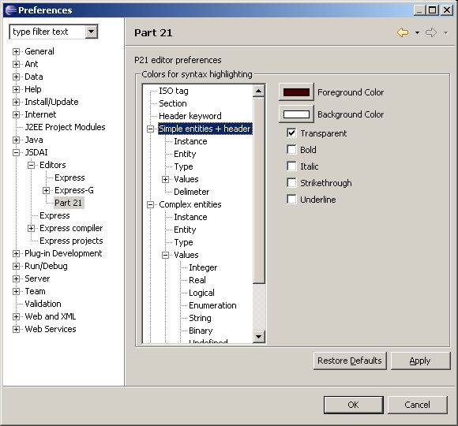

Open Editor for STEP files (with extesion .p21):
Window -> Preferences -> JSDAI
-> Editors -> Part 21.
You can choose syntax highlighting colors and font attributes for p21
editor here (see Figure 1).
You can set the same color/attribute for the whole branch of the tree
at once.
"Error" means the unrecognized tokens, i.e., an attempt is made to
recognize all the tokens and what is left - must be errors. That is
done without any parsing,
just with scanner rules.
 Figure 1. Preferences, dialog
window, Part 21 panel